In China Employee Termination in 2026: A Position Paper for Foreign Investors on Legal Defensibility, Payroll Governance, and Execution Discipline
Key takeaways
- Foreign investors should govern China termination risk at board or regional leadership level, not as a routine local HR process.
- The core policy principle is legal-route-first sequencing: no communication or payroll finalization before route confidence and evidence sufficiency are established.
- Cost and speed remain important, but they should be evaluated as risk-adjusted outcomes, not standalone targets.
- Cross-function consistency (legal, HR, payroll, manager, vendor) is a leading indicator of dispute resilience.
- Investor oversight should track defensibility metrics, not only case closure counts.
Legal and regulatory primer for foreign decision-makers
Foreign executives often ask whether China termination is “strict” or “flexible.” A more useful framing is structural: China uses a route-based legal model where employer decisions should align with recognized pathways and supportable facts. This does not mean employers cannot act. It means actions should be classified and documented in a way that remains coherent if challenged.
The legal baseline is layered. The Labor Contract Law is the primary source for route and consequence logic. The State Council implementation regulation adds practical interpretation for application in employer operations. Supreme People’s Court labor dispute interpretation provides an adjudication-facing perspective, which is especially relevant for evidence and consistency risk. The Social Insurance Law supports statutory obligations linked to termination-month closure activities. China Briefing serves as a practical translation layer for foreign operators, helping management understand how legal structure interacts with business operations.
For non-local readers, this leads to one core implication: termination governance quality is determined early. If route and evidence are weak at the beginning, downstream operational quality cannot fully repair exposure.
Position thesis
This paper takes a clear position: foreign investors operating in China should prioritize legal defensibility over short-term closure speed when those goals conflict. In practice, this means governance systems should force legal-route clarity, evidence integrity, and cross-function alignment before employee-facing release.
This is not a conservative posture for its own sake. It is a practical risk-management strategy. In many cross-border organizations, pressure for quick closure and predictable quarterly reporting unintentionally encourages teams to underweight legal uncertainty and documentation quality. The apparent gains from speed can then be offset by dispute costs, reputational friction, and management distraction. A defensibility-first governance model reduces this volatility.
Why cross-border practice often underprices termination risk
1) Metric bias toward speed and immediate payout
Global dashboards frequently emphasize throughput and cash impact. These metrics are useful but incomplete. They do not capture route confidence, evidence quality, or artifact consistency—factors that often determine downstream risk.
2) Ownership fragmentation
China cases in multinational structures can involve headquarters, regional teams, local teams, and vendors. Without explicit governance architecture, assumptions diverge and no single owner has full responsibility for coherence.
3) Template transfer without localization depth
Organizations may import templates from other jurisdictions and adjust wording, but leave route logic and escalation triggers under-specified for China practice.
4) Late-stage legal involvement
Legal teams are sometimes asked to review near-release artifacts rather than shape route and evidence decisions at case entry. This compresses risk identification into the final stage when rework is costly.
5) Archive neglect
Closure is often measured by process completion, not by retrieval readiness. Weak archive governance raises later response cost when disputes arise.
Together, these patterns create predictable underpricing of legal risk at decision time.
Policy stance: governance principles foreign investors should adopt
Principle 1: Route certainty is a hard precondition
No employee-facing communication or final payroll mapping should proceed without documented route classification and confidence statement.
Principle 2: Evidence is a decision gate, not a filing activity
Core factual assertions should be traceable to records before release. Missing critical evidence should trigger pause or route reassessment.
Principle 3: Coherence across legal, HR, and payroll is mandatory
Case rationale, communication language, and payment treatment should be aligned in one approved artifact set.
Principle 4: Local uncertainty must be visible and governed
Unresolved city-level interpretation questions should be logged, escalated, and confirmed where necessary before irreversible action.
Principle 5: Closure requires retrievability
A case is not “done” until archive index, ownership, and retrieval integrity are complete.
These principles are straightforward, but their impact is high because they target the most common failure points.
Governance contrast case A: speed-led approach vs defensibility-led approach
A foreign-invested company faces quarter-end pressure and wants to reduce headcount quickly. In a speed-led model, business intent drives immediate communication drafting and payroll preparation while legal route confidence remains partial. This often creates inconsistencies and increases hidden exposure.
In a defensibility-led model, the same case begins with route and evidence validation. Communication and payroll artifacts are built only after this stage passes. The timeline may extend modestly, but the final package is coherent, auditable, and lower risk. From an investor perspective, the second model produces more stable outcomes even if it appears slightly slower in isolated cases.
Governance contrast case B: restructuring portfolio under investor scrutiny
A regional restructuring includes China, with board focus on cost reduction and implementation pace. A uniform process is initially proposed across all markets.
Under weak governance, China cases are forced through one pace despite mixed readiness. Under defensibility governance, cases are segmented by route confidence and evidence status. Clean files proceed; ambiguous files escalate. This segmentation improves predictability and preserves decision credibility when reviewed by audit committees or investors.
The practical lesson is that differentiated control intensity is not inefficiency—it is risk-appropriate management.
Secondary operations section (kept subordinate to policy thesis)
Legal function
- Confirm route and confidence boundaries.
- Define mandatory evidence thresholds.
- Approve high-risk escalation decisions.
HR function
- Coordinate chronology, record integrity, and artifact versions.
- Enforce sequence from legal route to communication release.
- Own closure checklist and archive indexing.
Manager function
- Provide factual records.
- Avoid premature legal framing in employee communications.
- Escalate urgency conflicts through governance path.
Payroll function
- Keep mapping provisional until route and coherence gates pass.
- Align labels and treatment with approved rationale.
- Trigger stop when mismatch appears.
Vendor/EOR function
- Execute defined tasks within explicit ownership boundaries.
- Maintain transfer logs and traceability.
- Escalate responsibility ambiguity before closure.
This operations layer is intentionally practical. It supports governance principles without replacing them.
Exception handling governance
Exception 1: route changes after draft communication exists
- Freeze release.
- Revalidate evidence and all artifacts against updated route.
- Reapprove unified final bundle.
Exception 2: critical record gap discovered late
- Pause case.
- Classify gap severity and ownership.
- Decide whether to recover evidence, adjust route, or escalate alternative closure strategy.
Exception 3: payroll output and communication narrative diverge
- Hold final payroll dispatch.
- Reconcile legal/HR/payroll artifacts.
- Document revised approval and rationale.
Exception 4: unresolved local interpretation under timing pressure
- Log uncertainty explicitly.
- Seek local confirmation.
- Require formal risk acknowledgment if timing cannot wait.
Exception 5: archive ownership unclear between internal and vendor teams
- Block closure status.
- Assign single accountable retrieval owner.
- Complete indexed repository before final close.
These rules ensure pressure does not silently override policy.
System controls and board-level metrics
Practical controls
- Mandatory route field with approval status.
- Evidence completeness status with blocker owner.
- Pre-release coherence check across legal/HR/payroll.
- Local uncertainty flag with escalation workflow.
- Archive closure gate requiring index completion.
Board metrics to monitor
- Percentage of cases with route confirmation before communication drafting.
- Evidence-gap incidence at pre-release stage.
- Coherence-failure rate (legal/HR/payroll mismatch).
- Cases proceeding with unresolved local uncertainty.
- Closure files passing retrieval audit on first check.
These metrics move oversight from activity tracking to quality tracking.
Common governance mistakes and prevention
Mistake 1: “local HR can handle this end-to-end” assumption
Prevention: define cross-function ownership and board-level gating standards.
Mistake 2: measuring success by closure speed only
Prevention: include defensibility and coherence indicators in executive reporting.
Mistake 3: legal review at end-stage only
Prevention: position legal route determination at case entry.
Mistake 4: payroll treated as downstream mechanic
Prevention: make payroll a formal coherence gate owner.
Mistake 5: archive viewed as administrative afterthought
Prevention: require retrieval-ready closure as mandatory completion criterion.
What to do now
- Publish a formal investor-approved policy statement on China termination governance priorities.
- Implement legal-route-first gate in all China termination workflows.
- Add mandatory evidence and coherence checks before release.
- Introduce local-uncertainty escalation and logging standards.
- Embed closure retrieval requirements into process completion criteria.
- Train regional leaders on risk-adjusted decisioning vs speed-only optimization.
- Segment high-volume programs by case readiness and route confidence.
- Review governance metrics quarterly and adjust controls based on outcomes.
These steps are practical and can be implemented without waiting for full system redesign.
What to watch next
Foreign investors should monitor three evolving areas: city-level adjudication patterns affecting evidence emphasis, internal business cycles that increase pressure for shortcut behavior, and governance drift as global templates evolve. A periodic policy refresh tied to real case outcomes is essential for maintaining control quality.
Source-fit reassessment for this run
This run rotates from role-relay map to position-paper format while keeping source authority stable. Official legal and judicial sources remain the factual core; China Briefing remains the practical translation layer for multinational readers. Lower-fit tax-dominant and broad comparative commentary was not prioritized because this article’s goal is governance stance and investor-level policy direction.
FAQ
1) Why frame this as an investor issue instead of just HR policy?
Because mismanaged terminations can create enterprise-level cost volatility, legal exposure, and governance credibility risk.
2) Does defensibility-first governance conflict with business agility?
Not necessarily. It supports conditional speed—fast where confidence is high, controlled escalation where uncertainty is high.
3) Should all cases receive the same control intensity?
No. Control depth should reflect route confidence, evidence quality, and uncertainty profile.
4) Can vendor/EOR usage reduce governance burden?
It can improve execution capacity, but principal accountability for route and coherence remains with the employer.
5) Is this article legal advice?
No. It is informational and should be paired with qualified local professional advice for specific cases.
6) What is the most important metric to add immediately?
Route-confirmation-before-communication rate, because it captures sequencing discipline at the most consequential point.
Disclaimer
This article is for informational purposes only and does not constitute legal, tax, accounting, or compliance advice. China employment outcomes depend on case facts and local implementation practice. Employers should seek qualified local professional advice before making case-level decisions.
Sources
- National People’s Congress. Labor Contract Law of the People’s Republic of China (official English text; adopted 2007-06-29, amended 2012-12-28). http://www.npc.gov.cn/zgrdw/englishnpc/Law/2007-12/13/content_1384064.htm (accessed 2026-02-27).
- State Council. Regulations for the Implementation of the Labor Contract Law of the PRC (State Council Decree No. 535; official publication). https://www.gov.cn/gongbao/content/2008/content_1124615.htm (accessed 2026-02-27).
- Supreme People’s Court. Interpretation on Issues Concerning the Application of Law in the Trial of Labor Dispute Cases (I) (2020 amendment). https://www.court.gov.cn/fabu/xiangqing/243981.html (accessed 2026-02-27).
- National People’s Congress. Social Insurance Law of the People’s Republic of China (official English text; adopted 2010-10-28). http://www.npc.gov.cn/zgrdw/englishnpc/Law/2009-02/20/content_1471106.htm (accessed 2026-02-27).
- Dezan Shira & Associates (China Briefing). Employee Termination in China: A Guide for Employers (updated 2025). https://www.china-briefing.com/news/employee-termination-in-china/ (accessed 2026-02-27).
China-Payroll.com supports foreign employers with compliance-first EOR and payroll operations in China.
Need local employment support in China?
If you need a compliance-first partner for hiring, payroll, and risk controls in China, China-Payroll.com can help evaluate the right setup.
Image Prompt Pack
Create a 16:9 hero image for article title: 'In China Employee Termination in 2026: A Position Paper for Foreign Investors on Legal Defensibility, Payroll Governance, and Execution Discipline'. Scene: global operations team evaluating workforce model options f…